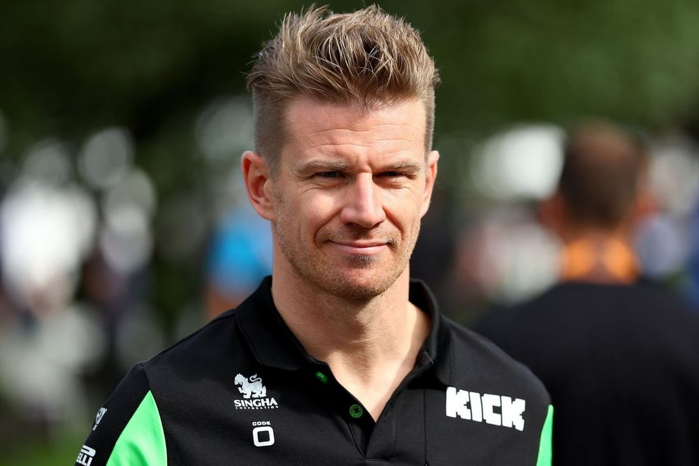
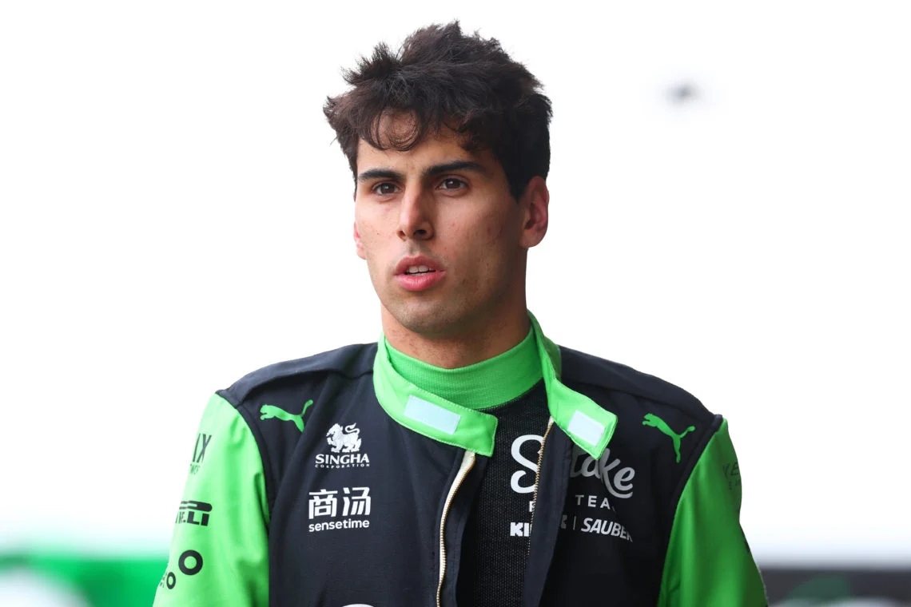

Kick Sauber

Stake F1 Team Kick Sauber
Team Principle: Jonathon Wheatley
Drivers: Nico Hulkenberg, Gabriel Bortoleto
Car: C45
Reserve Drivers: TBD
Academy Drivers: Emma Felbermayr
Nico Hulkenberg
Nico Hulkenberg has been in the sport since 2010 and had a lot of promise but he has never stood on the podium. He left the sport but came back in 2023 to driver for Haas but he moves to Kick Sauber for this season. He has scored 6 points so far which is good for the car he is driving."
Race Engineer: Gary Gannon
Gabriel Bortoleto
Gabriel Bortoleto is a rookie that won FIA Formula 2 in 2024 after a title fight between himself and Isack Hadjar. He has performed decently but due to the car he is in he is currently last in the standings with 0 points.
Race Engineer: Jose Manuel Lopez